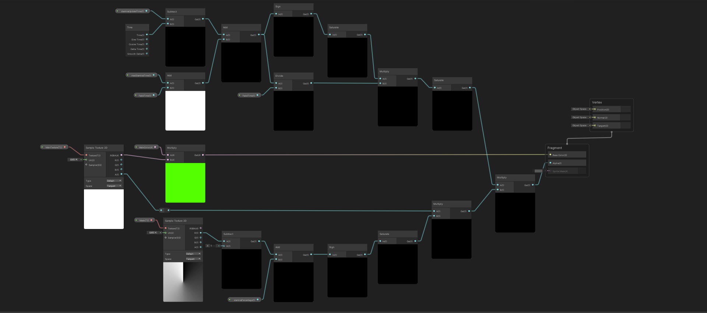

Operation Starfall
Project Status: Completed
Project Type: Hybrid Learning Environment
Project Duration: 4 Weeks
Software Used: Unity
Languages Used: C#
Primary Role(s): Game Developer
Team: 2 Devs, 1 Artist
About Operation Starfall
Our Unannounced Game as a Service is a 2D Metroidvania experience for local co-op play, inspired by beloved 1980s cartoons. It operates as a constantly evolving game, offering an expanding open world, engaging storylines, and character customization. Join up to 4 players as you embark on cooperative adventures and exciting missions, uncovering the mysteries of the game's world while customizing your characters with 1980s nostalgia.
My Features
Intro
Utilizing a shader for the first time to create a stamina bar in Unity offered me a new perspective.
instead of traditional coding approaches, or using UI.
Having Shadergraph provide a visual and node-based interface,
made it more accessible for developers who did not have any experience with shaders at all.
This was an eye opening experience to develop something so visually impressive and functional at the same time,
without having to write a single line of code.
The Radial Stamina bar serves as a substitute for the previous stamina system due to popular demand
within our development team.
The design is inspired by the stamina bar in Zelda Breath of the Wild.
This collaborative project was undertaken in partnership with Jason Siegersma.
Given that the stamina bar makes use of Shadergraph,
it resulted in me discovering new potential ways to utilize shaders and their
intricacy within a feature like this.
Gif of the Radial

In the gif above you can see the shape and size of the radial, as you can see it looks just like Zelda: Breath of the Wild!
Development
Learning Unity shader coding was a real challenge. At first, I had to grasp the concept of how shaders manipulate graphics. It didn't click at once. Then, I delved into the shader language and its functions, which was like deciphering complex instructions. There were moments of frustration when my shaders didn't work as intended, just like when you hit roadblocks with an assignment. But, with determination and lots of trial and error, I started to understand how to control colors, lighting, and textures. Finally, I realized that shaders were like crafting a unique artistic expression for each object in the game. It was a demanding journey, but in the end, it was incredibly rewarding to see how shaders transformed the visual aspect of the game.
A function from the script.

In the snippet above you can see the code of when the staminabar is depleted and how long it takes to regenerate the stamina back.
How the radial would look in game

As seen above the stamina radial goes empty when running and when it hits 0, it plays an
animations and then regenerates the stamina back over time.
Conclusion
By leveraging Shader Graph, developers can create visually stunning and customizable stamina bars that align with the aesthetic and design requirements of their game, ultimately contributing to a more immersive and engaging gameplay experience for players.
The full Shadergraph:
This shader has 3 significant things happening in the top, middle & bottom.